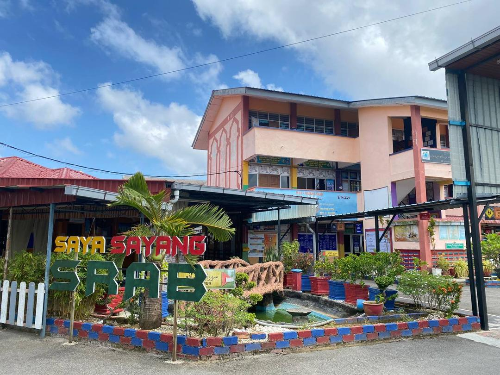
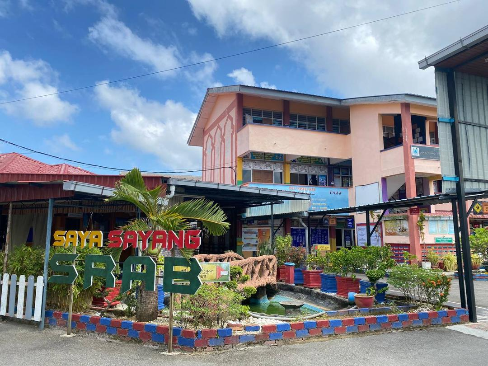
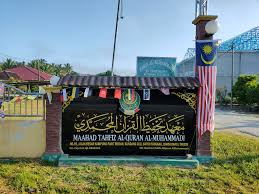
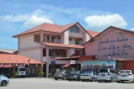

PRIMARY SCHOOL
I attended Sekolah Rendah Agama Bersepadu (SRAB) in Muar. I took my UPSR here and I got 3A 2B 1C for my result. where I built my foundation in education, developed basic skills, and made lifelong memories.
I attended Sekolah Rendah Agama Bersepadu (SRAB) in Muar. I took my UPSR here and I got 3A 2B 1C for my result. where I built my foundation in education, developed basic skills, and made lifelong memories.
My journey continued at Maahad Tahfiz Al-Quran Al-Muhammadi. Here, I study subjects related to religion such as Mutholaah, Insya', Tafsir, Tauhid, Hadith and so on. I also started my struggle in memorizing 30 juz al quran and studying dinniyyah subjects to take the SMU exam in form 4. Alhamdulillah, at the beginning of 2021, I managed to finish memorizing 30 juz of the Al-Quran and successfully sat the SMU exam in a situation of an increasingly contagious pandemic virus that caused a lockdown that prompted me to move to another school that was closer to take SPM
After finishing khatam AL-Quran and finished my Sijil Menengah Ugama (SMU), I continued my education journey taking SPM at Sekolah Menengah Kebangsaan Dato' Sri Amar Diraja in "ALIRAN SASTERA". I got 4A 3B 1C for my SPM and with this result, I have an opportunity to continue my journey in education to higher level which is university..
Currently, I am continue my studies into higher level to university as I approach the completion of my Diploma in Information Management at UiTM Segamat, I reflect on a journey filled with valuable learning experiences, personal growth, and unforgettable memories. As a final semester student, I am eager to apply the knowledge and experiences I’ve gained to future endeavors and contribute meaningfully to the information management field. I am deeply grateful for this enriching journey and excited to embrace the challenges and opportunities ahead.